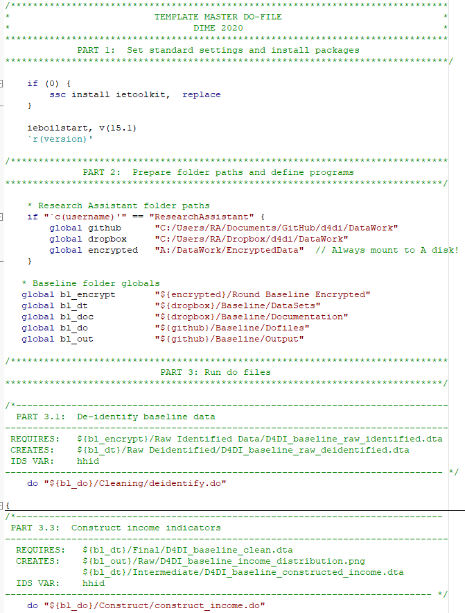

A master script is the main script that calls upon and runs all the other scripts of a project. It

/*******************************************************************************
PROJECT NAME
Task description
Inputs: input1.dta
input2.xlsx
Outputs: graph.png
table.xlsx
Author: Name [email]
Last update: Oct 2021
Notes: This is just a suggestion.
Need to update it when new data is received
*******************************************************************************/DON’T REPEAT YOURSELF
gr pie process_value, over(procurement_type) legend(on position(4) cols(1))
gr pie process_value, over(bid_procedure) legend(on position(4) cols(1))
gr pie process_value, over(process_type) legend(on position(4) cols(1)) DON’T REPEAT YOURSELF
Numbers
forvalues number = 1/5 {
di `number'
}General
foreach word in "hello" "goodbye" {
di "`word'!"
}WET
gr pie process_value, over(procurement_type) legend(on position(4) cols(1))
gr pie process_value, over(bid_procedure) legend(on position(4) cols(1))
gr pie process_value, over(process_type) legend(on position(4) cols(1)) DRY
foreach var of varlist procurement_type bid_procedure process_type {
gr pie process_value, over(`var') plegend(on position(4) cols(1))
}
Comments
Comments should be used to